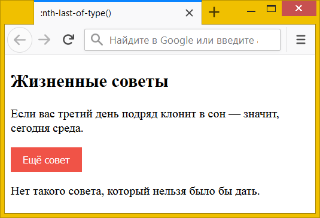

:nth-last-child() и :nth-last-of-type()
Псевдоклассы :nth-child() и :nth-of-type() выбирают заданные элементы из группы братских элементов, начиная с первого. В противоположность им, псевдоклассы :nth-last-child() и :nth-last-of-type() выбирают элементы, считая от последнего.
Приведём несколько примеров.
:nth-last-child(1)Выбирает последний элемент, аналогичен :last-child.
:nth-last-child(2)Выбирает предпоследний элемент.
:nth-last-child(-n+2)Последние два элемента.
:nth-last-child(n+2)Все элементы, кроме последних двух.
:nth-last-child(2n) или :nth-last-child(even)Все чётные элементы, начиная с конца. :nth-last-child(even) идентичен :nth-child(even) только при нечётном общем числе элементов (пять, к примеру); если общее число элементов чётное (шесть, к примеру), то :nth-last-child(even) идентичен :nth-child(odd).
:nth-last-child(2n+1) или :nth-last-child(odd)Все нечётные элементы, начиная с конца.
Псевдокласс h2:last-child(1) выбирает последний элемент из группы, затем проверяет, какой это элемент. Если это <h2>, то он будет выбран, в противном случае элемент выбран не будет. В качестве примера рассмотрим следующую структуру элементов.
<section>
<h2>Первый заголовок</h2>
<p>Первый абзац</p>
<h2>Второй заголовок</h2>
<p>Второй абзац</p>
</section>Здесь псевдокласс без указания селектора :last-child(1) выберет последний элемент — <p>Второй абзац</p>. p:last-child(1) выберет этот же абзац, потому что он одновременно последний и это элемент <p>. h2:last-child(1) не выберет ничего, поскольку не совпадают два условия одновременно: последний элемент и элемент <h2>. При этом h2:last-child(2) выберет <h2>Второй заголовок</h2>, здесь уже условия совпадают: элемент <h2> и предпоследний элемент.
Псевдокласс :nth-of-type() работает схожим образом, но выбирает элементы только указанного типа. Так, запись h2:nth-last-type(1) означает выбрать последний элемент <h2>. Наличие элементов другого типа (<p>) при этом игнорируется. Для HTML, приведённого выше, h2:nth-last-type(1) выберет строку <h2>Второй заголовок</h2>, поскольку это последний элемент <h2> внутри <section>.
В примере 1 с помощью :nth-last-of-type прячется последний абзац через свойство display со значением none. При получении кнопкой <button> фокуса (для этого достаточно щёлкнуть по кнопке), все абзацы ниже кнопки становятся видны. При потере кнопкой фокуса (щелчок по любому месту за пределами кнопки) абзацы снова скрываются.
Пример 1. Использование :nth-last-of-type
<!DOCTYPE html>
<html>
<head>
<meta charset="utf-8">
<title>:nth-last-of-type()</title>
<style>
button {
background: #f05347; /* Красный цвет фона */
color: #fff; /* Белый текст */
display: inline-block; /* По ширине содержимого */
padding: 0.5rem 1rem; /* Поля вокруг текста */
border: none;
}
button:focus ~ p {
display: block; /* Показываем абзацы */
}
p:nth-last-of-type(1) {
display: none; /* Прячем последний абзац */
}
</style>
</head>
<body>
<section>
<h2>Жизненные советы</h2>
<p>Если вас третий день подряд клонит в сон —
значит, сегодня среда.</p>
<button>Ещё совет</button>
<p>Нет такого совета, который нельзя было бы дать.</p>
</section>
</body>
</html>Результат данного примера показан на рис. 1.

Рис. 1. Скрытый последний абзац
Вместо p:nth-last-of-type(1) можно использовать p:last-of-type для выбора последнего абзаца или p:nth-of-type(n+1) для выбора всех абзацев, кроме первого.